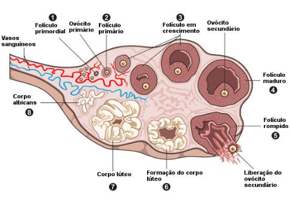

Apresentação
Nesta Unidade de Aprendizagem (UA), estudaremos a espermatogênese e a ovogênese, que são os processos de formação dos gametas masculinos (espermatozóides) e dos gametas femininos (ovócitos). Estudaremos também a embriologia comparada entre a espécie humana e animal e também as diferenças entre as espécies.
A embriologia tem como objeto de estudo o desenvolvimento pré-natal inicial de um animal. Essa etapa se inicia com a fecundação (união do espermatozóide com o óvulo), o que originará um zigoto. O espermatozóide e o ovócito são células sexuais altamente especializadas, sendo originadas a partir da meiose, que é um processo de divisão celular.
O processo de formação dos gametas é denominado gametogênese, em que a formação do espermatozóide denomina-se espermatogênese e a do ovócito ovocitogênese ou ovogênese. Apesar da gametogênese masculina e feminina ocorrer antes do estágio do desenvolvimento embrionário propriamente dito, o conhecimento de como se formam os gametas é de extrema importância para a compreensão das primeiras fases embrionárias.
A espermatogênese acontece nos testículos e a ovogênese ocorre nos ovários. O espermatozóide e o ovócito são células muito especializadas. Elas contêm a metade do número de cromossomos (23) das outras células do corpo (46). A restauração do número normal de cromossomos (46) ocorre quando essas duas células se unem (no processo chamado fecundação) e formam o zigoto.
Objetivos:
Desafio
Ovulação

Pensando nisso, reflita: em quais espécies a ovulação é espontânea e em quais é induzida?
Na Prática
O estudo da gametogênese animal é de extrema importância para o médico veterinário, principalmente aquele que vai trabalhar com melhoramento genético e reprodução animal em grandes e pequenos animais, como na inseminação artificial. Cabe a estes profissionais proporcionar o aumento da produção e o melhoramento genético, por meio da realização de técnicas que tenham uma maior eficiência, alcançando bons resultados para toda cadeia produtiva. Além disso, o conhecimento nessa área auxilia no diagnóstico de anomalias e doenças genéticas de origem hereditária, diminuindo assim os riscos durante a gestação animal.
Apostila
Os fenômenos que ocorrem na gametogênese são de extrema importância na perpetuação das espécies, uma vez que, com a união dos dois gametas, haverá o restabelecimento e a manutenção do número cromossômico da espécie. Em alguns animais como insetos, nematelmintos e vertebrados existe precoce separação das células germinativas de tipos celulares somáticos. Já em outros filos animais (cnidários, platelmintos e tunicados) e em todo o reino vegetal, essa divisão não está tão bem estabelecida. Nessas espécies de animais, as células somáticas podem facilmente se tornar células germinativas, mesmo em organismos adultos (GILBERT, 2003).
Naqueles organismos nos quais existe uma linhagem germinativa estabelecida (p.ex., vertebrados), separando-se precocemente no desenvolvimento, as células germinativas não se originam de dentro da gônada propriamente. Em mamíferos, as células germinativas primordiais migram da parede do saco vitelínico por movimentos amebóides, e em aves, pela corrente sanguínea até o interior das gônadas em desenvolvimento. Na espécie humana, estas células chegam às cristas genitais (local que originará a gônada - testículos ou ovários), ao fim da quinta semana de vida do embrião, quando aumentam seu número através da mitose durante sua migração e após chegarem à “gônada”, quando, então, iniciam o preparo para a fertilização, ou seja, a gametogênese.
Quando comparamos a ovogênese e a espermatogênese quanto à variação entre as espécies, a primeira é a que apresenta maior variação. Em algumas espécies, tais como os ouriços-do-mar e as rãs, a fêmea rotineiramente produz centenas ou milhares de ovócitos de uma vez, enquanto em outras espécies, como nos seres humanos e na maioria dos mamíferos, somente são produzidos alguns ovócitos durante a vida de um indivíduo. A atividade mitótica das ovogônias prossegue por toda a vida dos invertebrados, mas é limitada ao início do desenvolvimento nos vertebrados superiores. À exceção de alguns teleósteos e anfíbios, todas as divisões mitóticas das ovogônias completam-se e elas entram em prófase meiótica durante a vida embrionária (exemplo: aves, humanos, roedores e ruminantes) ou logo após o nascimento (por exemplo, em suínos, carnívoros e lagomorfos).
O corpúsculo polar fica situado entre os ovócitos II e a zona pelúcida dos folículos maduros e são eliminados do ovário, durante a ovocitação, juntamente com os ovócitos II (a cadela e a égua são exceções, pois a formação do ovócito II só se dá após a ovulação dentro da tuba uterina).
O ovócito de mamíferos, ao ser ovulado, permanece bloqueado em meiose II (exceto em cadelas e em algumas éguas, que ovulam ovócitos em meiose I). A maioria tem ovos oligolécitos (no caso dos humanos é dito alécito, pela quase ausência de vitelo). Os ovos dos mamíferos mais primitivos (monotremados) assemelham-se aos das aves, por terem tamanho relativamente grande (1,3 cm a 1,8 cm no ornitorrinco) e muito vitelo e por serem postos. Ovos de todos os mamíferos superiores (placentários) são muito pequenos (cerca de 0,1 mm de diâmetro), praticamente desprovidos de vitelo, os quais, durante o desenvolvimento, são mantidos dentro do corpo materno.
A ovulação é espontânea na vaca, égua, ovelha, cabra, porca, cadela, chimpanzé, rata, camundonga, macaca Rhesus e mulher. É induzida pela cópula com o macho na gata, fêmea do furão, fêmea do coelho e membros da família Camelídios, como as fêmeas de camelos, dromedários e lhamas.
A atividade mitótica das ovogônias das aves e mamíferos é limitada ao início do desenvolvimento, e, a partir desse momento, cessam sua multiplicação. Nos demais vertebrados, nem todas as ovogônias se multiplicam ao mesmo tempo, permanecendo algumas em estágio indiferenciado e originando uma nova fase de multiplicação após cada postura.
Referências
-
ALMEIDA, J. de M. Embriologia veterinária comparada. Rio de Janeiro: Guanabara Koogan, 1999
-
GILBERT, S. F. “Determinação do sexo”. In: Biologia do desenvolvimento. 5. ed. São Paulo: FUNPEC, 2003. p. 773-804.
-
Histologia%20e%20 Embriologia%20Animal%20 Comparada.pdf ESSE LINK NÃO ABRE
-
PEROBELLI, J. E. Gametogênese feminina - ovogênese. Depto de Morfologia/ IBB,Unesp- In: https://pt.slideshare.net/juliaberardo9/ovognese-14489700) Depto de Morfologia/ IBB, Unesp, 2010.